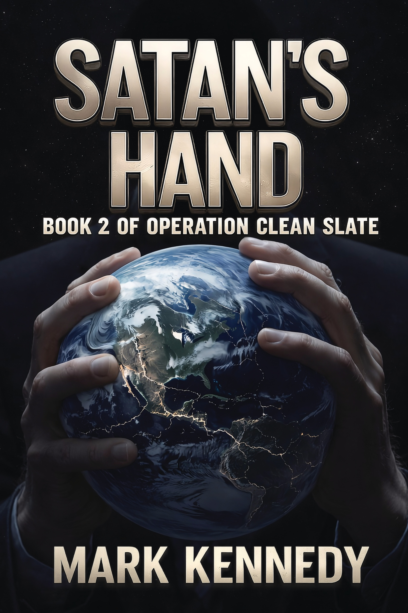
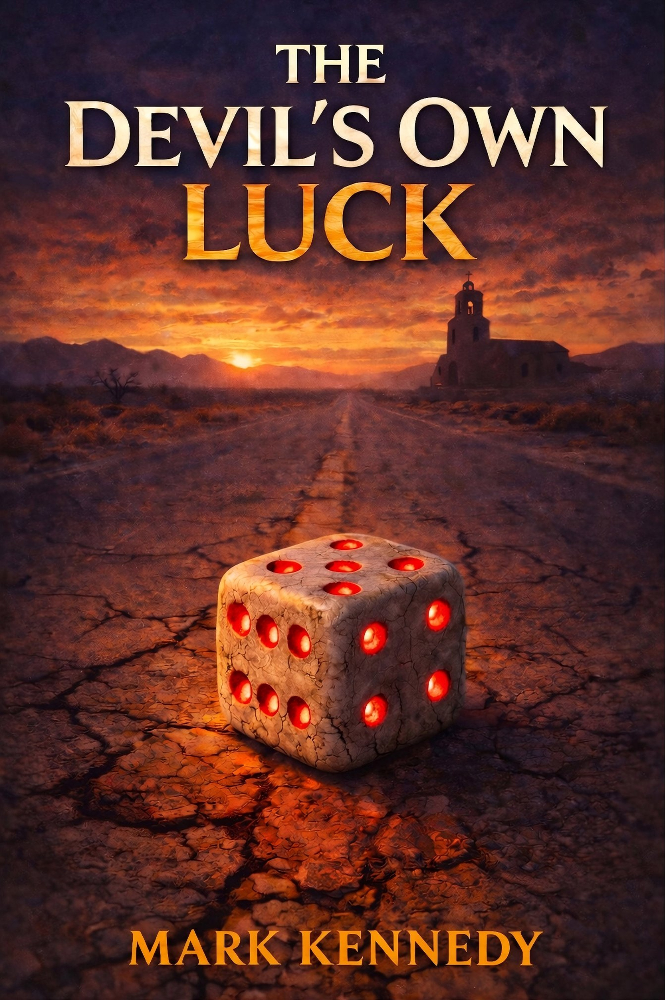

Fiction that follows the evidence, even when the answer is uncomfortable.

Book 2 of Operation Clean Slate
The rock is gone. The crisis isn’t.
Earth survived the impactor—barely. The mission that saved humanity made heroes of two worlds. Now those heroes are coming home to a planet that isn’t sure it wants them.
The alliance between Earth and Mars was forged in desperation. In the aftermath, desperation gives way to politics, and politics has its own physics: every action produces an unequal and far more destructive reaction.
Someone is already calculating the leverage.
Book 1 of Operation Clean Slate
An interstellar object is hurtling toward Earth. It isn’t natural.
When astronomers detect a massive kinetic impactor on a collision course with Earth, the math is undeniable: the impact will be an extinction-level event. Humanity has eighteen months to stop it—or cease to exist.
But stopping it requires something unprecedented. Earth and Mars—two civilizations separated by millions of miles and decades of distrust—must cooperate on a mission that pushes physics, engineering, and human endurance to their absolute limits.
The science is unforgiving. The distances are real. The margins for error don’t exist.

Luck is a quiet thing—until it leaves.
Alex Reeves sold his for ten thousand dollars. Now every bet he makes loses.
Ruby Yang refused to sell hers. Now someone wants it—and he’ll do anything to get it.
Together they uncover a hidden exchange: objects that tilt probability, expose desire, and reshape choices—so long as their owners accept whatever comes due.
They are not the only ones looking.
One man gathers the pieces, patient and certain. Another watches from the edges, offering help. In the desert, certainty is more dangerous than chance.
Mark Kennedy got his start writing video games for the Intellivision at Mattel Electronics, and has spent the last thirty-five years as a cybersecurity engineer at Symantec, where he is a Distinguished Engineer. Both careers taught him the same lesson: every system has rules, every rule has a cost, and somebody is always looking for the exploit.
His research in Victorian-era criminal history has produced published work challenging established theories on the Jack the Ripper case, and his fiction draws on the same instinct—following evidence wherever it leads, even when the answer is uncomfortable.
He lives in Las Vegas with his wife Chloe and a household of dogs and cats, three of whom are named Alex, Ruby, and Eric. He swears the names came first.
The Devil’s Own Luck is his debut novel. The Operation Clean Slate series begins with Satan’s Fist and continues with Satan’s Hand.
For inquiries, rights, or just to say hello:
If you’ve read one of the books and enjoyed it, please leave a review on Amazon. If you read it and didn’t enjoy it, please tell no one.